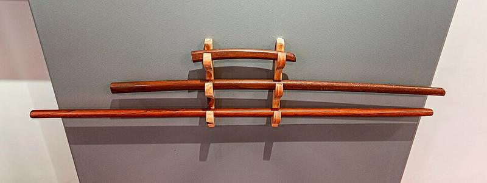

Weapons Footwork
Saito’s sword and staff volumes are the strictest footwork material on the shelf, and the reason is simple: a weapon makes errors legible. With empty hands a sloppy step can be hidden by a helpful partner. With a sword the distance is either right or the cut does not land, and the feet are the only thing that can be wrong. This article takes the three lessons the weapons work makes explicit.

Photo: Norkiña, CC BY-SA 4.0, via Wikimedia Commons.


Why Train the Feet With a Weapon
The weapons forms are not a separate subject from empty-hand aikido in these sources; they are the same material with the tolerance removed. Saito’s sword-and-stick work uses the same hanmi, the same facing postures and the same entering and turning that the empty-hand techniques use. What changes is that the weapon will not forgive a bad step.
That makes the weapons work the honest test of the footwork taught in the rest of the series. If the step is correct the technique is there; if it is not, no amount of upper-body cleverness recovers it.
One Step, One Cut
The classical sword distance is issoku-ittō no maai — one step, one cut. It is the gap at which a single committed step delivers the cut, and it is both the closest safe distance and the furthest useful one.
The footwork reading is that the distance is defined by a step rather than measured independently. You do not look at the gap and decide; you place yourself so that one of your steps exactly spans it. This is the same idea as ma-ai counted in steps, made stricter: with a weapon there is exactly one step in it, not “one or two.”
Suri-ashi: The Sliding Step
The movement used to cross that gap is suri-ashi, the sliding step. The sole stays in contact with the mat; the foot slides rather than lifts. The rear foot slides up toward the front, then the front foot extends — never the reverse, and never with the feet crossing.
Why the slide rather than a lifted step: a lifted foot means the head rises and the base is momentarily gone, both of which a weapon punishes. Sliding keeps the height constant and keeps one foot loaded throughout. It is the same requirement taiji states as “pivot on one foot, never slide on two” — here expressed as a positive instruction to keep contact rather than a prohibition.
The Reach Changes, the Feet Do Not
Replace the sword with the staff (jō) and the distance grows by the length of the weapon. But the posture, the weight split and the sliding step are unchanged. The sources are consistent on this: the tool changes where the engagement happens, not how the body gets there.
That is the transferable statement. Ma-ai is measured from the tip of whatever you are holding, and the feet do the same work regardless. A player who understands this separates two things that are usually conflated — reach and footwork — and can adjust one without disturbing the other.
On the Tennis Court
1. Use the strict version to test the loose one. The weapons principle — remove the tolerance and see if the footwork still works — is a good design for practice. A drill in which a late step simply fails is worth more than one in which a helpful feed hides the fault.
2. Define position by one step. “One step, one cut” has a direct analogue: place yourself so that one recovery step puts you exactly at the ball. Positioning stated in those terms is checkable in a way that “stand a bit further back” is not.
3. Keep contact, keep height. The sliding step’s real content is that the base is never surrendered. On court that is the argument for a low, connected adjustment step over a hop, and it is why the head stays level on a well-played ball.
Source Books
Morihiro Saito, Traditional Aikido Vol. 2 — Sword & Stick — hanmi, gyaku- and ai-hanmi, and the weapons forms built on the same footwork: aikido_saito_sword_stick_v2_vi
Morihiro Saito, Takemusu Aikido Vol. 1 — the same posture and step in the empty-hand material: aikido_takemusu_vol1_vi
Cross-checked against Shoji Nishio’s Aikido — Võ Đạo Của Sự Chấp Nhận on weapons and entering: aikido_nishio_yurusu_budo_vi
All quotations translated from the Vietnamese readers of these editions. Diagrams are original work made for the TFL Footwork Research Project.
← Ma-ai and De-ai - Distance and Timing, Both Decided by the Feet | TFL Footwork Research Project